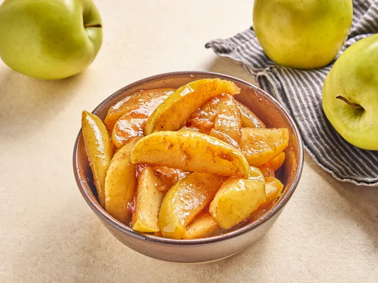

This recipe is from allrecipes ,i decided to get a dessert this time to get more variety and sweetness to your life, more information about the origin of the recipe is at the description page of "allrecipes", also you can try adding ingredients or removing them to make the recipe more of your liking
Ingredients
- 6 tablespoons butter
- 4 Golden delicious apples, sliced, or more as needed
- 2 teaspoons ground cinnamon
- 1/2 cup white sugar
- 1/2 cup cold water
- 1 1/2 tablespoons cornstarch
Preparation
- Melt butter in a deep skillet over medium-high heat.
- Add apples, cinnamon and sugar and stir until well coated in sugar mixture. Bring mixture to a simmer. Reduce heat to medium-low and cook, covered until apples are very tender, about 20 minutes.
- Whisk together cold water and cornstarch until dissolved. Stir cornstarch mixture into apple mixture and return to a simmer. Cook until thickened, about 2 minutes; remove from heat.